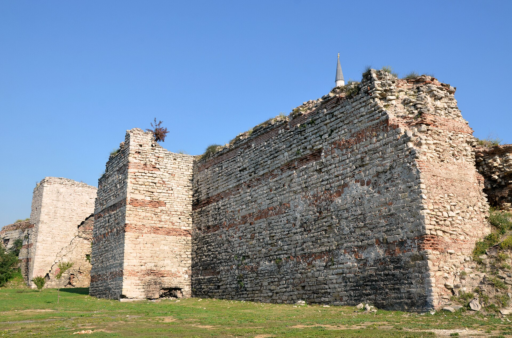
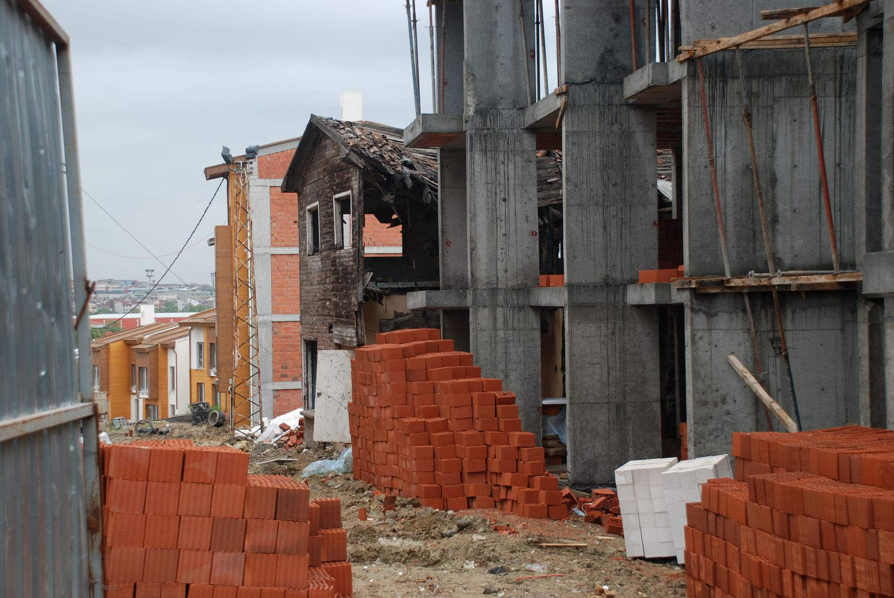
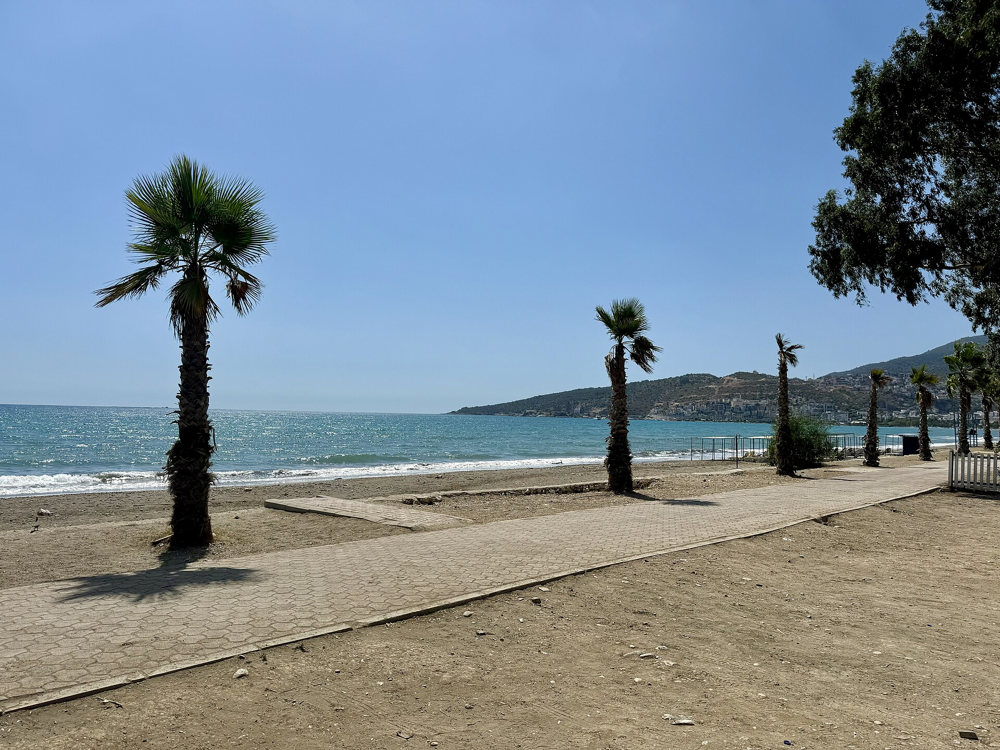

First draft Superseded
“A spectacular generative tree. Maximum particle density. The audience should feel overwhelmed by the scale of the projection.”
Architect in Split. A city, a building, a room, an object and a screen are one problem at different magnifications.
See the workI have never experienced a city, a building, a room, an object and a screen as separate disciplines. This publication documents one method through its evidence.
From a square measured in pedestrians to a tree made of light. Point at a line to bring up its plate.
Hologram
Motion
Konya
The height of a three year old.
If you could redesign a public square from a height of 95 centimetres, you would notice different things. Broken pavements become barriers. Traffic becomes a wall of noise. A bench is unreachable. A planter is a horizon.
The team used tactical urbanism (paint, planters, flexible furniture) to test interim changes before justifying permanent reconstruction. Cheap. Fast. Measurable.
After the intervention the square was no longer a transit corridor. It had become a destination.
Measured impact, baseline against endline. Superpool and NACTO GDCI, 2019 to 2020.
Three of the sites behind the drawings, as they are.



What changes between scales is the material. What remains constant is the method: observe, question, give form.
The client said: “I want a tree that feels alive.” That sentence was the entire brief. Everything else had to be directed.
Seven iterations. Each one removed something. The final version was quieter, slower and more alive than the first. The client had asked for spectacle. What they received was presence. They approved it in silence.
“A spectacular generative tree. Maximum particle density. The audience should feel overwhelmed by the scale of the projection.”
“The tree grows, responds, breathes light. Reduce particle density until the canopy breathes. The emotion is quiet wonder, not spectacle.”
“The tree is suffocating. Reduce leaf particles by 40%. Let it breathe. Every particle that remains must earn its place.”
Tell Elif what you are making and how large it is. The form opens a ready written email in your own mail app.